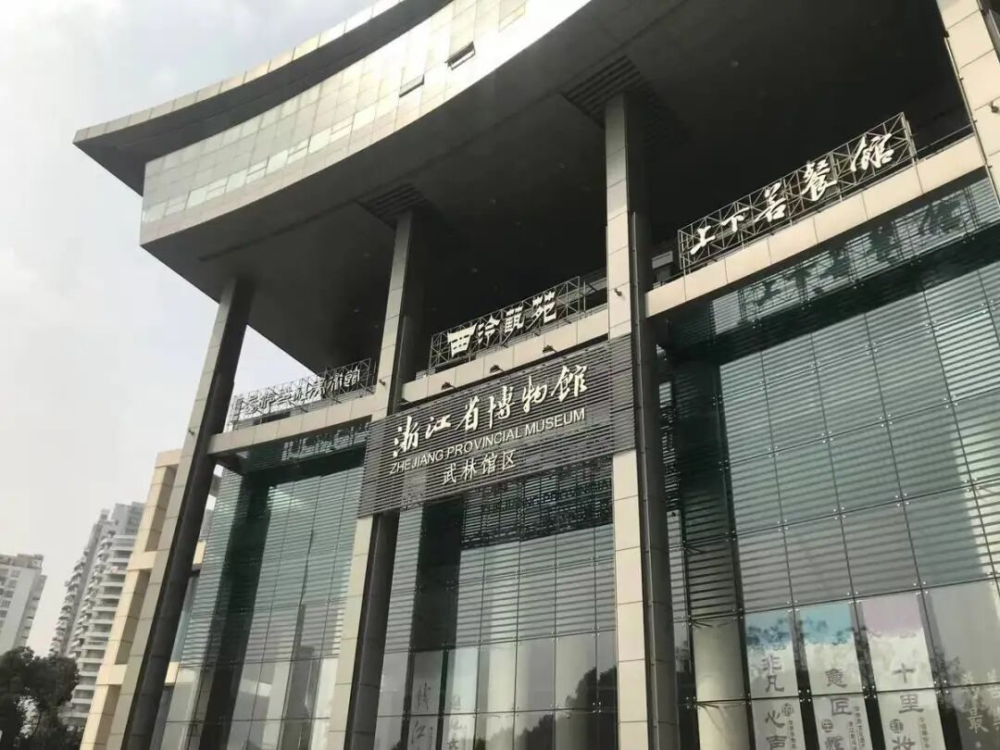
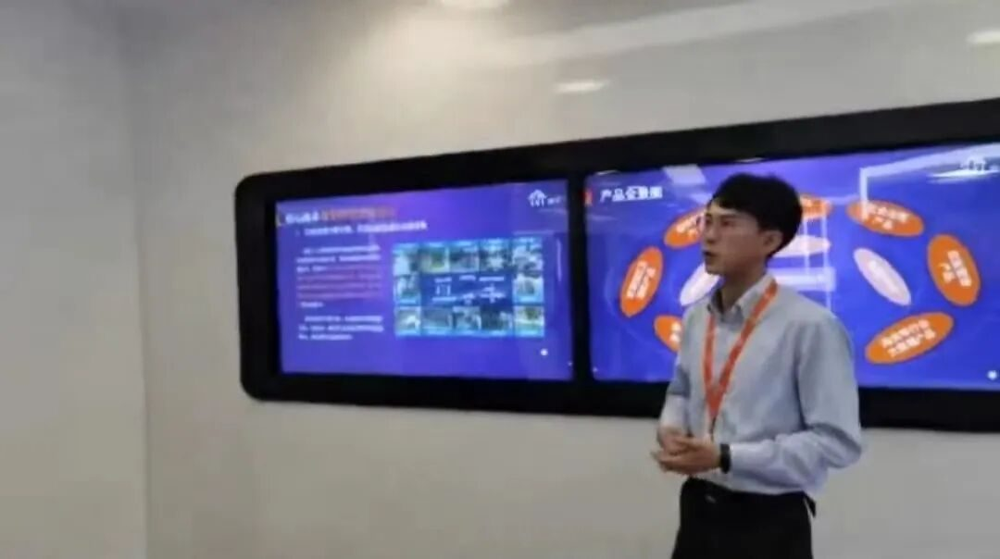
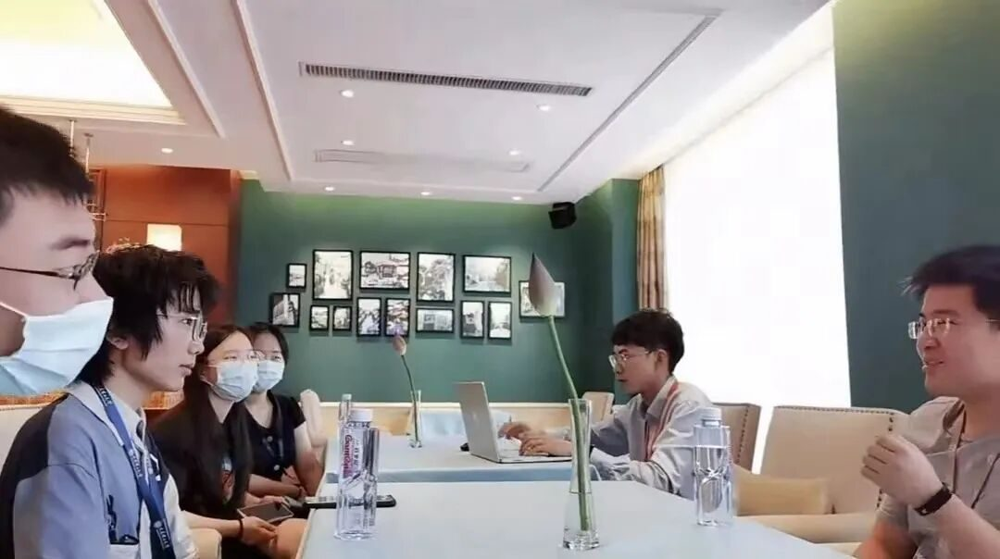

科技激活未来，文物复现历史

行
者
无
疆
科技激活未来
文物复现历史
X I N G Z H E W U J I A N G
流
眄
苏
杭
杭州，古称“钱塘”的城市
是“日出江花红似火”
是“烟柳画桥，风帘翠幕”
亦是“山外青山楼外楼”
追随着第一天京杭运河的波浪，来到了本期实践活动的第二天，行者们探寻的脚步迈入了科技与文化当中，开启了杭州科技与文化之旅。
互联网文化推进城市发展
6月21日上午，我们通过线上线下相结合的方式参观了城云科技，城云科技作为具有国内领先的大数据智能场景应用创新技术的城市大数据企业，具备卓越的前沿技术整合与应用开发融合能力。在多媒体智慧城市体验和工作人员的热情介绍下，结合在调研地的切身体会，队员们真实地感受到了互联网给城市管理提供的巨大帮助，给人们生活带来的无限便利。

在采访环节中，城云科技公司的负责人细心耐心地用专业知识和通俗易懂的语言让我们感受到智慧城市的魅力所在，他说：“通过智慧城市等科技手段，可以高效的推进城市管理与基层治理。” 同时也热情地回答了我们对于“智慧城市”，“城市大脑”的一些疑问，负责人说：“互联网文化，给相关的科技公司的发展带来了推进，同时，相关的科技公司也在为互联网文化的发展助力。”这让我们意识到相关科技公司与互联网文化之间的联系，二者相辅相成，共同发展。

畅游文物海洋，一窥风雅钱塘
到了下午，我们一同去参观了浙江省博物馆。各个省市的博物馆就像是一本本厚厚的书，从中，我们能看到一座城市的前世今生，读出一座城市的尘封记忆。
在吴山的半山腰处，一片树林之中，隐约看见一个“腹有诗书气自华”的建筑，这便是浙江省博物馆。走进南馆，进入展厅，映入眼帘的便是正中摆放的杯子，这便是浙江省博物馆的“镇馆之宝”——战国水晶杯，正如其名字，它使用一整块水晶刻制而成，素面无纹，造型简单大方，是迄今为止我国出土的早期水晶制品中最大的一件文物。
东南形胜
三吴都会
钱塘自古繁华
继续向前，映入眼帘的是代表历史，代表文化的文物——官窑、刀剑、扇子、诗书画……数不胜数。南馆展示了多姿多彩的杭州历史文脉，北馆则设计了充满杭州元素的陈展。
浙江省博物馆作为浙江省最具影响力之一的博物馆，让我们真真切切地了解了杭州的前世今生，品味了风雅钱塘韵悠长。
东南形胜
三吴都会
钱塘自古繁华
队员感悟
经历了一天的学习与实践，队员们都感悟颇深：“对互联网有了更深刻的理解”、“感受到互联网文化独有的魅力”、“岗位工作是立体的，多面的”……
在队员们深刻的感悟中，第二天的科技与文化实践圆满结束了。
来源 | 行者无疆实践团
文字 | 徐晓彤
排版 | 杨婧葳
审核 | 朱华玮 崔雨琪
行者无疆实践团
QQ：2758025831

长按二维码
与行者们一路流眄苏杭！